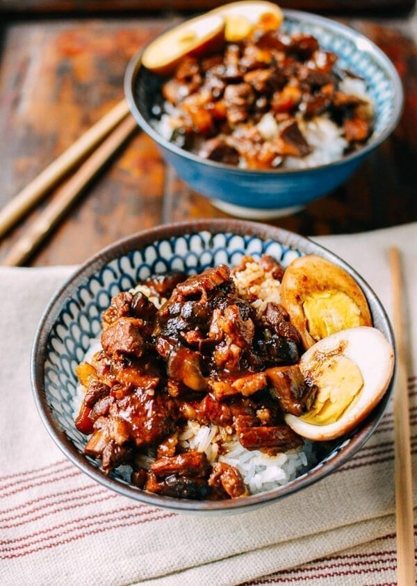

Lu Rou Fan (Taiwanese Braised Pork Rice Bowl)
Recipe and description taken from The Woks of Life
Description
I don’t think there’s any debate on this issue. Lu rou fan (滷肉饭) is one of THE most beloved Taiwanese comfort foods. Second only perhaps to a piping bowl of beef noodle soup (and even then, a very close second).
There is, however, an on-going debate on whether this dish originated in Taiwan or Shandong, China. Apparently, 滷肉饭 and 鲁肉饭 are written differently, but both sound alike and the latter states the origin of Shandong in its name. To help set the record straight, the Taipei government actually launched a huge campaign in 2011, handing out 1000 bowls of lu rou fan and claiming ownership of the dish. That’s dedication, my friends. Can you imagine the U.S. government handing out a thousand apple pies or cheeseburgers, in the quest to put their political weight behind a food item?
Ingredients
- 1 lb skin-on pork belly
- 2 tsp neutral oil
- 1 oz rock sugar
- 1 yellow onion
- 8 shiitake mushrooms
- ¼ cup Shaoxing wine
- 3 tbsp light soy sauce
- 2 tbsp dark soy sauce
- 2 cups water
- 4 hardboiled eggs
For the Spices
- 3 star anise
- 1 cinnamon stick
- 6 cloves
- 3 bay leaves
- 2 tsp Sichuan peppercorns
- 2 pieces dried tangerine peel
- 2 slices fresh ginger
Instructions
- Bring a medium pot of water to a boil—just enough to fully submerge the pork. Blanch the chopped pork belly for 1 minute. Drain, rinse under cold water to remove any scum, and set aside.
- In a Dutch oven, heat the oil over low heat. Break the sugar into smaller pieces if needed and add it to the wok. Cook gently until the sugar begins to melt and caramelize. Add the diced onions and increase the heat to medium-high. Stir-fry the onions for 1 minute, then add the mushrooms and continue stir-frying for another 2 minutes.
- Add the blanched pork belly, Shaoxing wine, light soy sauce, dark soy sauce, and water. Stir well and bring the mixture to a boil. Once it reaches a boil, add the spices (tied securely in cheesecloth) and the peeled hardboiled eggs. Reduce the heat to the lowest setting, cover, and simmer for 1½ hours, stirring occasionally to prevent sticking.
- The pork should now be fall-apart tender. To finish the dish, remove the spice packet and increase the heat to medium-high. Simmer for about 5 minutes to reduce and thicken the sauce, stirring occasionally. The sauce should be thick enough to coat a spoon while still leaving a generous amount for serving. Serve hot over steamed white rice.